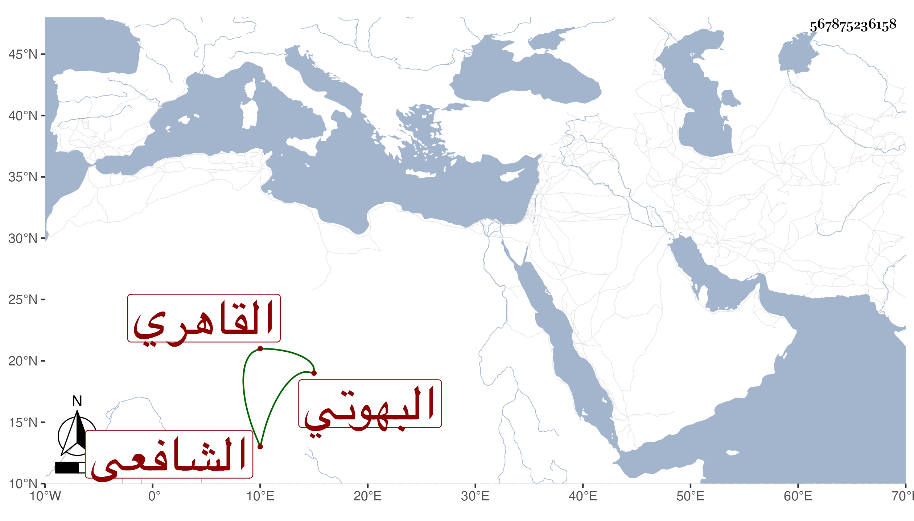

0902Sakhawi.DawLamic.ITO20230111-ara1.EIS1600.567875236158
Biography ID: 567875236158
163
عبد الرحمن بن أحمد بن عبد الواحد جلال الدين أبو الفضل بن الشهاب البهوتي الأصل القاهري الشافعي الماضي أبوه . ولد في مستهل ذي الحجة سنة سبع وستين وثمانمائة وحفظ القرآن وغيره واشتغل قليلا عند البرهان بن أبي شريف والسنتاوي ونحوهما وحضر إلي في يوم عاشوراء سنة إحدى وتسعين فسمع مني أشياء ، وهو ذكي فطن حسن الفهم غير متصون ممن ينتمي للخيضري وينافر زوج أخته الديمي وولدهما .
